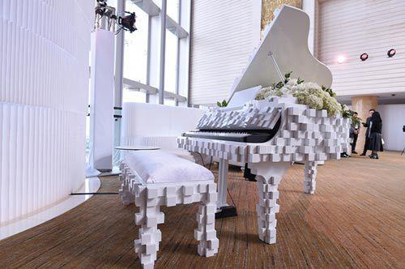

<!DOCTYPE html>
<html ng-app="ionicApp">
<head>
  <meta charset="utf-8">
  <meta name="viewport" content="initial-scale=1, maximum-scale=1, user-scalable=no, width=device-width">

  <title>淘购区</title>
  <link href="https://cdn.bootcss.com/ionic/1.3.2/css/ionic.css" rel="stylesheet">
  <link rel="stylesheet" href="../css/style.css">
  <script src="https://cdn.bootcss.com/ionic/1.3.2/js/ionic.bundle.min.js"></script>
  <script src="../js/yu.js"></script>
  <script type="text/javascript">
    angular.module('ionicApp', ['ionic'])

      .config(function($stateProvider, $urlRouterProvider) {

        $stateProvider
          .state('tabs', {
            url: "/tab",
            abstract: true,
            templateUrl: "templates/tabs.html"
          })
          .state('tabs.home', {
            url: "/home",
            views: {
              'home-tab': {
                templateUrl: "templates/home.html",
                controller: 'HomeTabCtrl'
              }
            }
          })
          .state('tabs.facts', {
            url: "/facts",
            views: {
              'home-tab': {
                templateUrl: "templates/facts.html"
              }
            }
          })
          .state('tabs.facts2', {
            url: "/facts2",
            views: {
              'home-tab': {
                templateUrl: "templates/facts2.html"
              }
            }
          })
          .state('tabs.about', {
            url: "/about",
            views: {
              'about-tab': {
                templateUrl: "templates/about.html"
              }
            }
          })
          .state('tabs.navstack', {
            url: "/navstack",
            views: {
              'about-tab': {
                templateUrl: "templates/nav-stack.html"
              }
            }
          })
          .state('tabs.contact', {
            url: "/contact",
            views: {
              'contact-tab': {
                templateUrl: "templates/contact.html"
              }
            }
          });


        $urlRouterProvider.otherwise("/tab/home");

      })

      .controller('HomeTabCtrl', function($scope) {
        console.log('HomeTabCtrl');
      });
  </script>
</head>

<body>

<ion-nav-bar class="bar-positive">
  <ion-nav-back-button>
  </ion-nav-back-button>
</ion-nav-bar>

<ion-nav-view></ion-nav-view>


<script id="templates/tabs.html" type="text/ng-template">
  <ion-tabs class="tabs-icon-top tabs-positive">

    <ion-tab title="Home" icon="ion-home" href="#/tab/home">
      <ion-nav-view name="home-tab"></ion-nav-view>
    </ion-tab>

    <ion-tab title="About" icon="ion-ios-information" href="#/tab/about">
      <ion-nav-view name="about-tab"></ion-nav-view>
    </ion-tab>

    <ion-tab title="Contact" icon="ion-ios-world" ui-sref="tabs.contact">
      <ion-nav-view name="contact-tab"></ion-nav-view>
    </ion-tab>

  </ion-tabs>
</script>


<!--*****-->
<script id="templates/home.html" type="text/ng-template">
  <ion-view view-title="淘宝区">
    <ion-content class="padding">
      <div class="div1" style="margin-bottom: 130px;text-align: center">
        
        <p style="font-size: 16px;margin: 40px 0 20px 0;">精美电钢琴88键锤成人电子钢琴智能钢琴</p>
        <span style="border:1px solid #6f00d2;font-size: 16px;">活动价</span>
        <span style="font-size: 20px;color: red;margin: 0 30px 0 10px;">￥2289</span>
        <span style="border:1px solid #6c6c6c;font-size: 16px;margin: 0 10px;">原价</span>
        <span style="font-size: 18px;color: #6c6c6c;"><s>￥3590</s></span>

        <div class="tao" style="text-align: left;margin:30px 0 0 15%;">
          <p>商品信息 :</p>
          <p>品牌:<span>Yamaha/雅马哈</span></p>
          <p>支持智能设备:<span>iOS</span></p>
          <p>是否有导购视频:<span>有</span></p>
          <p>款式:<span>便携式</span></p>
          <p>踏板数:<span>三踏板</span></p>
          <p>键盘类型:<span>重锤键盘</span></p></div>
      </div>
      <p>
        <a class="button icon icon-right ion-chevron-right" href="#/tab/facts">Scientific Facts</a>
      </p>
    </ion-content>
  </ion-view>
</script>

<script id="templates/facts.html" type="text/ng-template">
  <ion-view view-title="Facts">
    <ion-content class="padding" style="line-height: 52px;font-size: 1em;text-indent: 40px;color: indianred;">
      <p>钢琴是乐器之王，弹钢琴的好处显而易见，诸如开发孩子的音乐智能，促进孩子大脑的发育，锻炼手指的灵活性以及身体的协调性，陶冶情操，
        提高对音乐的鉴赏力，让生活变得更加充实，更有品味。钢琴音乐也是一扇通向人们创造思维和形象思维的窗口，孩子从小受到良好的音乐教育，
        尤其是通过学习各种乐器，就会使他们较快地找到打开这扇窗户的钥匙。不仅如此，即使是中年人或者老年人学习钢琴也是大有裨益的。</p>
      <p>
        <a class="button icon ion-home" href="#/tab/home"> Home</a>
        <a class="button icon icon-right ion-chevron-right" href="#/tab/facts2" >了解更多</a>
      </p>
    </ion-content>
  </ion-view>
</script>

<script id="templates/facts2.html" type="text/ng-template">
  <ion-view view-title="Also Factual">
    <ion-content class="padding">
      <p class="sop2-one"> 1、 开发智力
        钢琴是最能体现音乐原理的乐器，也是中外乐器中音域最宽的乐器。由于它能够完整地表达一首音乐作品错索复杂的声音对位，所以对钢琴弹奏者的智力
        开发很有帮助。因为钢琴作品是所有乐谱中最复杂的，分析和理解这些乐曲，需要乐理知识、和声知识、复调知识等，还要有较强的记忆能力、推理能力、
        分析能力、逻辑判断能力等。所以，弹奏钢琴，可以使全身处于半体力劳动与脑力劳动相结合的状态。从手到脚，从眼睛到耳朵协调完成各种复杂的技巧
        动作，从而达到较好的智力锻炼。手指的运动成为儿童智力开发的基础，弹钢琴就必须活动双手，手指的动作越复杂，越娴熟，就能与大脑建立更多的联系，
        就能有效地锻炼大脑的功能，尽早的开发大脑的潜能，使之更加灵敏和聪慧。学琴也可以帮助老人开发智力，让老人在美的熏陶中远离老年痴呆。</p>
      <p class="sop2-one">2、培养乐感
        乐感是对音乐感受力的简称，她是对音乐的众多因素的排列组合以及乐曲的进行、气势、色彩、轻重缓急等要素的总体感受。在钢琴启蒙教学中，最容易被老
        师忽视的就是乐感的培养，因此，钢琴教师的责任重大。培养乐感首先要引导学生领悟乐曲的内容、音乐形象和所表达的思想感情。乐感的培养，教师还可以
        通过指导学生欣赏音乐作品来完成。</p>
      <p class="sop2-one">3、协调身体
        从小让孩子练习钢琴，可以促进孩子大脑的发育、锻炼手指的灵活性以及身体的协调性、陶冶情操。弹钢琴并不仅仅是手指自己的运动所得来的。人体的各部
        位紧密相连，举手投足之间，都会牵动其他部位。弹钢琴是一种全身运动，在完成弹钢琴的动作中，除了手臂的上下运动外，离不开全身其他部位的支持，遇
        到弹奏钢琴这种需要完成双手快速不同动作的情况，身体的协调能力则更加重要。</p>
      <p class="sop2-one">4、培养习惯
        建立常规就是培养习惯。人们都知道要培养良好的习惯，但怎样引导孩子培养良好的习惯是一个很困难的问题。学习钢琴的时间一般都在学龄前，学琴的孩子
        要在他们每天的生活中增添一项与其他小朋友不同的活动，而且要做到在每天的练琴时间里注意力高度集中，认真细心，手脑并用；自然而然地进入了学习状
        态，慢慢也就习惯了上课时要态度认真，下课要主动练习的要求，就能够用充沛的精力去迎接将来的学习任务，重要的是让兴趣能持久，成为一种生活习惯。</p>
      <p class="sop2-one">5、磨练意志
        钢琴是一门技术性很强的表演艺术，日复一日，年复一年的练习，有的甚至需要更长的时间去不断练习，在这么漫长的练习中不管多么枯燥，多么辛苦，
        都要坚持下来。因为通过学习钢琴，他们从小就懂得知识和技能的获得，必须要有持之以恒的精神，坚持就是胜利。我教过许多孩子，有些开头很出色，
        但坚持不下去就半途而废了，有些学生因为坚持反而渐渐赶上来了。</p>
        <p class="sop2-one">6、提高情商
        情商由大脑边缘系统控制，研究表明，根据该系统的特点，只有靠大量的反复不断的练习才能提高情商。也就是说，提高情商像是弹钢琴，通向成功的唯
        一道路就是练习，练习，再练习。人的性格各有不同，说话做事的表达方式也不一样，而音乐恰恰是一种特殊的语言，它能够让不同性格的人们用他们独
        有的方式来表达自己的情感。</p>
        <p class="sop2-one">7、有益健康
          欢乐的音乐能够调节大脑及整个神经系统，协调身体各个器官的活动，这对消除学习紧张而引起的心理疲劳效果明显。专家指出，优美的音乐，动听的
          旋律能加速人体分泌一些有益健康的激素，能调整大脑功能，解除身体疲劳，产生神清气爽之功效。因为它需要手、眼、脚、耳、脑并用。有关研究表明，
          长期的、系统的、全面的钢琴训练，会使人的心脏、四肢、大脑等主要器官保持在一个合理、健康、平衡的状态，从而达到修身养性、益寿延年的作用。
          所以经常弹钢琴会对身体产生用药物不能带来的健康。</p>
        <p class="sop2-one">8、陶冶情操
          弹钢琴可以使人心境更豁达，充实精神生活。在专心练琴时，演奏者可以达到“神游世界、物我两忘”的境界，非常有助于人们修身养性，提高素质，
          调剂紧张的学习、工作，缓解生活中的压力。学习弹奏钢琴，要接触和浏览大量的优秀钢琴音乐作品，通过长期的训练和音乐作品的熏陶，不仅可以
          使孩子或老人情感丰富、情绪开朗、性格趋于平和稳定，而且对优良心理品质的形成产生重大影响。</p>
        <p class="sop2-one"> 9、扩展知识
          音乐艺术是人类文化创造的伟大成果之一，也是世界现代文化的重要领域之一。儿童学习弹奏钢琴，无论对乐器本身、音乐构成诸要素、乐谱、世界
          著名音乐家及其作品都将在学习过程中逐渐有所深入了解，从而使儿童的知识领域大大拓展。</p>

      <a class="button icon ion-home" href="#/tab/home"> Home</a>
        <a class="button icon ion-chevron-left" href="#/tab/facts">返回上一页</a>
      </p>
    </ion-content>
  </ion-view>
</script>

<script id="templates/about.html" type="text/ng-template">
  <ion-view view-title="About">
    <ion-content class="padding">
      <h3>Create hybrid mobile apps with the web technologies you love.</h3>
      <p>Free and open source, Ionic offers a library of mobile-optimized HTML, CSS and JS components for building highly interactive apps.</p>
      <p>Built with Sass and optimized for AngularJS.</p>
      <p>
        <a class="button icon icon-right ion-chevron-right" href="#/tab/navstack">Tabs Nav Stack</a>
      </p>
    </ion-content>
  </ion-view>
</script>

<script id="templates/nav-stack.html" type="text/ng-template">
  <ion-view view-title="Tab Nav Stack">
    <ion-content class="padding">
      <p></p>
    </ion-content>
  </ion-view>
</script>

<script id="templates/contact.html" type="text/ng-template">
  <ion-view title="Contact">
    <ion-content>
      <div class="list">
        <div class="item">
          @IonicFramework
        </div>
        <div class="item">
          @DriftyTeam
        </div>
      </div>
    </ion-content>
  </ion-view>
</script>

</body>
</html>
